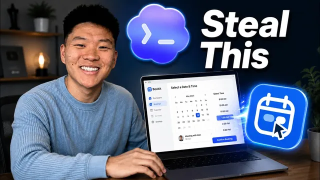

Calendly를 복제했다, 이제 평생 무료

원본 영상 보기 →
- "목표 프롬프트 + 자율 테스트 루프"가 핵심 레버리지예요
- 에이전트는 기능은 잘 만들어도 "사람이 처음 보는 화면에서 뭘 누르고 싶어 하는지"는 놓쳐요
- "공짜로 만들었다"는 헤드라인과 실제 비용 구조는 달라요
한 줄 요약
유튜버 Nate Herk가 코덱스(Codex) 에이전트에게 프롬프트 몇 개만 던져서 Calendly를 통째로 클론했어요. "스냅타임(Snag Time)"이라는 예약 시스템을 5일 만에 완성했는데요. 빌드 과정부터 실제 비용(약 1만5천 달러 상당, 본인 실지출은 약 150달러), 한계까지 전부 공개합니다.
전체 내용 정리
예약 시스템 "스냅타임"은 Calendly 기능을 거의 그대로 재현했어요
Calendly의 기업가치는 약 30억 달러예요. 경쟁사 Cal.com도 1억5천만 달러 규모로 평가받고 수천만 달러를 투자받았습니다. Nate는 이 두 서비스의 핵심 기능을 프롬프트 몇 개로 클론해 "스냅타임"이라는 이름의 예약 시스템을 만들었어요.
대시보드에서는 예정된 예약, 이번 달 예약 건수, 예약된 총 시간, 활성화된 이벤트 링크 개수를 한눈에 확인할 수 있습니다. 워크스페이스 브랜딩·비밀번호·프로필 사진 변경, 팀원 초대와 권한(멤버/관리자) 설정도 가능하고요.
"이벤트 타입"이라는 개념으로 상담 세션마다 서로 다른 예약 링크를 만들 수 있는데, Calendly나 Cal.com을 써본 사람이라면 익숙한 구조죠.
실시간 캘린더 동기화와 결제 연동까지 실제로 작동합니다
데모에서는 실제 구글 캘린더와 연동되는 모습을 직접 보여줘요.
예약 페이지에서 비어있는 시간대만 노출되고, Nate가 실제 캘린더에 새 일정을 넣으면 예약 페이지에도 그 시간이 실시간으로 막히는 걸 확인시켰습니다. 예약이 완료되면 상대방 이메일로 캘린더 초대장이 발송되고 수락도 가능했어요.
유료 상담 세션은 Stripe와 연동돼 있어 결제 없이는 예약이 완료되지 않는 구조예요. 테스트에서는 샌드박스 카드로 결제 흐름 전체(카드 입력 → 결제 확인 → 예약 확정)가 실제로 작동하는 것을 보여줬습니다.
실제 서비스로 쓰려면 로컬 환경을 Vercel 같은 곳에 배포하고, 구글 계정·백엔드 데이터베이스·Stripe 계정을 연결해야 해요.
에이전트가 놓친 사용자 경험 디테일은 결국 사람이 손봤어요
Nate가 강조한 대목이 있는데요. 에이전트들이 앱을 수십 번 테스트하면서도 발견하지 못한 문제가 있었다는 점이에요.
예약 흐름의 진행 단계를 보여주는 상단 프로그레스바가 있었는데요. 원래는 클릭이 안 되고, 화면 하단의 화살표 버튼으로만 이전 단계로 돌아갈 수 있게 설계돼 있었습니다. 그런데 실제 사람이 쓸 때는 화살표보다 상단 프로그레스바를 먼저 클릭하려는 경향이 있다는 걸, Nate 본인이 사용해보고서야 알아챘어요.
에이전트에게 사용성을 신경 쓰라고 프롬프트에 명시했음에도 이런 부분은 놓쳤습니다. 결국 사람이 직접 써보며 UX를 다시 손봐야 했죠.
빌드는 리서치→기획→구축→테스트 4단계 루프 프롬프트 하나로 시작됐어요
Nate가 실제로 던진 프롬프트는 대여섯 개뿐이었습니다.
첫 프롬프트는 "Calendly를 로컬에서 무료로 돌아가게 클론해달라"는 대형 목표 프롬프트였어요. 이 안에 네 단계를 명시했죠. 리서치(사람들이 Calendly·Cal.com에서 좋아하는 점과 싫어하는 점 조사) → 기획(필요한 기능과 서브 에이전트·백엔드·연동 구조 설계) → 구축 → 테스트.
이후 에이전트는 빌드하고, 테스트하며 버그를 찾고, 고치고, 다시 테스트하는 루프를 며칠에 걸쳐 스스로 반복했어요.
특히 테스트 단계가 인상적입니다. 완성본을 사람에게 넘기기 전에 50개의 서브 에이전트를 동시에 투입해, 회원가입·관리자 화면·이벤트 생성 등 전체 사용자 흐름을 반복적으로 클릭하며 버그를 찾아내게 했어요.
이름·디자인 리브랜딩과 성능 최적화도 추가 프롬프트로 해결했습니다
초기 결과물은 "Tempo Cove"라는 이름으로 나왔고 디자인도 다소 "바이브 코딩스러운" 느낌이었어요. Nate는 이름을 "스냅타임"으로 바꾸고 UI를 재설계해달라는 피드백 프롬프트를 추가로 던졌습니다.
이후 테스트 과정에서 예약 페이지가 눈에 띄게 느리고 마우스·타이핑 반응이 버벅이는 문제를 발견했어요. 그래서 로딩 시간을 1초대에서 10밀리초 수준으로 줄여달라는 목표 프롬프트로 성능을 개선했고, 이어서 버튼 배치 등 UI를 한 번 더 다듬는 프롬프트를 추가했습니다.
즉 완성까지 리서치·기획·구축·테스트라는 큰 틀 외에, 리브랜딩·성능 개선·UX 재조정까지 총 대여섯 번의 프롬프트만 사용됐어요.
5일간 334시간의 에이전트 작업에 실제 비용은 1만5천 달러 상당이었습니다
Nate가 공개한 수치를 볼까요.
실제 에이전트가 돌아간 작업 시간은 5일 5시간이었어요(중간중간 다른 영상 작업을 하느라 대기한 시간까지 포함하면 캘린더상으로는 더 걸렸죠). 이 기간 동안 여러 에이전트가 병렬로 돌며 누적 334시간을 작업했습니다.
고유하게 생성된 서브 에이전트는 76개였는데요(에이전트가 재사용되는 방식으로 추정합니다). 실제 작업 위임 횟수는 이보다 훨씬 많은 것으로 추정된다고 밝혔어요. 50개 에이전트를 동시에 투입한 테스트 루프가 여러 번 있었기 때문이죠.
토큰 사용량은 입력 321억 317만 8,736개, 출력 4,700만 개였고, 이를 달러로 환산하면 약 1만5천 달러 상당의 프로젝트였습니다.
다만 여기서 반전이 있어요. Nate는 코덱스(Codex) 월 200달러 정기 요금제를 쓰고 있었기 때문에, 실제 추가로 지출한 금액은 약 150달러(사용량 크레딧 초과분)뿐이었다고 밝혔습니다.
같은 200달러 요금제 기준으로 코덱스는 최대 약 1만4천 달러 상당의 추론(inference)을 제공하는 반면, 클로드 코드(Claude Code)는 최대 약 8천 달러 상당이라고 비교해요. 요금제를 풀로 쓸 경우 코덱스 쪽이 약 6천 달러어치 더 많은 추론을 준다는 거죠.
이 프로젝트가 증명하는 것과 증명하지 못하는 것
Nate는 스스로 이 결과를 과대포장하지 않으려 애썼어요.
몇 개의 프롬프트로 핵심 기능이 도는 앱을 만든 것은 사실이지만, 이것이 곧 "SaaS 제품을 만들고 스케일링하는 것이 쉬워졌다"는 뜻은 아니라고 선을 그었습니다.
소규모 팀이 내부용으로 쓰는 도구를 만드는 것과, 월 수만 달러 규모의 인퍼런스·데이터베이스 트래픽을 감당하며 실제 고객에게 파는 제품을 만드는 것은 완전히 다른 문제라는 거예요.
그는 이 도구를 자신의 팀에서 실제로 채택하더라도 앞으로 계속 버그와 기능 요청이 나올 것이고, 누군가는 그것을 책임지고 유지보수해야 한다고 인정했습니다. 완성된 스냅타임은 자신의 무료 커뮤니티(Skool)에 설정 가이드와 함께 공개돼 있어요.
핵심 인사이트
- "목표 프롬프트 + 자율 테스트 루프"가 핵심 레버리지예요: 기능을 하나씩 지시하는 대신 리서치→기획→구축→테스트라는 큰 루프를 한 번에 맡기고, 완성 전 수십 개의 서브 에이전트로 사용자 흐름을 반복 클릭하게 만드는 방식이 개발자 없이도 작동하는 프로덕트를 뽑아낸 핵심 구조였습니다.
- 에이전트는 기능은 잘 만들어도 "사람이 처음 보는 화면에서 뭘 누르고 싶어 하는지"는 놓쳐요: 프로그레스바 클릭 이슈처럼, 명시적으로 UX를 신경 쓰라고 지시해도 실사용 관점의 사소한 습관성 클릭 패턴은 사람이 직접 써봐야 잡힙니다.
- "공짜로 만들었다"는 헤드라인과 실제 비용 구조는 달라요: 실제 인퍼런스 가치로는 1만5천 달러 상당이지만, 정액 요금제 안에서 소화됐기 때문에 실지출은 150달러 수준이었어요. 정액제 AI 코딩 플랜을 풀로 활용하면 클론 프로젝트의 체감 비용을 극단적으로 낮출 수 있다는 뜻이죠.
오늘 당장 해볼 것
- 본인 업무에서 반복적으로 쓰는 예약·상담·결제 흐름이 있다면, 그 흐름을 "리서치→기획→구축→테스트" 4단계로 나눈 목표 프롬프트 하나를 코덱스나 클로드 코드에 던져보세요. 로컬 프로토타입이 어디까지 나오는지 시험해보는 거예요.
- AI가 완성했다고 보고한 결과물도 반드시 본인이 처음 써보는 사용자 입장에서 직접 클릭해보세요. 어색하게 느껴지는 지점(버튼 위치, 클릭 유도)을 따로 메모해 재작업 프롬프트로 넘기시면 됩니다.
- 정액제 AI 코딩 플랜(월 구독형)을 쓰고 있다면, 이번 달에 남은 사용량 한도 안에서 업무용 내부 도구 하나를 클론·프로토타입 제작에 실험적으로 배정해보세요.